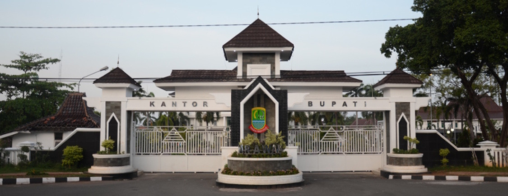

Sejarah Karawang
Karawang memiliki jejak sejarah yang panjang, dengan penemuan situs-situs prasejarah yang menunjukkan bahwa daerah ini telah dihuni sejak ribuan tahun lalu. Situs-situs arkeologi seperti Cibuaya dan Karawang Kulon menunjukkan adanya peradaban awal dengan alat-alat batu dan benda-benda peninggalan budaya.
Pada abad ke-4 hingga ke-5 Masehi, Karawang merupakan bagian dari Kerajaan Tarumanagara, sebuah kerajaan Hindu yang berpengaruh di wilayah Jawa Barat. Karawang juga memiliki hubungan dengan kerajaan-kerajaan lain seperti Sunda dan Pajajaran, yang mendominasi wilayah Jawa Barat sebelum kedatangan Islam.
Pada masa penjajahan Belanda, Karawang mengalami perubahan signifikan. Belanda mengembangkan sistem perkebunan besar dan mengembangkan infrastruktur untuk mendukung ekonomi kolonial. Karawang dikenal sebagai salah satu daerah penghasil padi utama di Jawa Barat, yang menjadi pusat produksi pertanian penting selama periode ini.
Selama perjuangan kemerdekaan Indonesia, Karawang menjadi saksi pertempuran sengit antara pasukan Indonesia dan Belanda. Salah satu peristiwa penting adalah Pertempuran Karawang-Bekasi pada 1945, di mana banyak pejuang kemerdekaan gugur. Peristiwa ini menjadi simbol perjuangan rakyat Indonesia untuk meraih kemerdekaan.
Setelah kemerdekaan Indonesia, Karawang terus berkembang sebagai kabupaten yang penting dalam sektor pertanian, industri, dan pendidikan. Karawang dikenal dengan julukan "Lumbung Padi Nasional" karena peranannya dalam produksi padi. Selain itu, kota ini juga mengalami perkembangan pesat dalam sektor industri dengan banyaknya kawasan industri dan pabrik.
Saat ini, Karawang tidak hanya dikenal sebagai pusat pertanian dan industri, tetapi juga sebagai tempat yang kaya akan cagar budaya dan destinasi wisata. Situs-situs sejarah, seperti candi-candi kuno dan peninggalan kolonial, menarik perhatian wisatawan dan peneliti sejarah. Karawang juga memiliki sejumlah objek wisata alam dan budaya yang menarik bagi pengunjung.
Sejarah Karawang mencerminkan perjalanan panjang dari masa prasejarah hingga era modern, dengan berbagai perubahan dan perkembangan yang membentuk karakter kota ini saat ini.